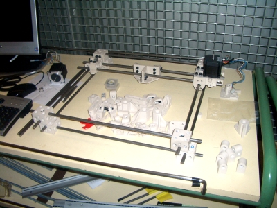
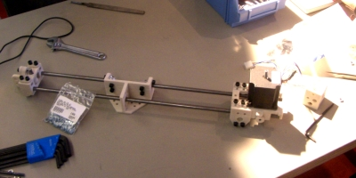
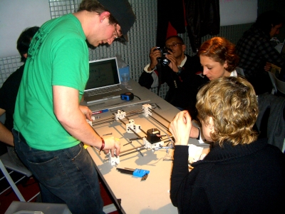
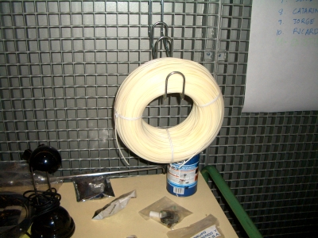
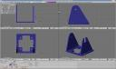

En el medialab prado el taller sobre reprap, impartido por Zach Smith, sigue su curso. Yo sigo avanzando con la nueva versión de los módulos Y1 para ser impresos con esta máquina…
La máquina estaba pensada para ser terminada el pasado viernes, sin embargo algunas piezas no eran las correctas y se tuvieron que volver a encargar. Esto ha retrasado bastante. En la imagen superior se puede ver el estado actual de reprap. Las piezas blancas han sido “impresas” en una máquina industrial (cortesía de Stereo Print). La estructura principal está formada por varillas metálicas de 8 mm de diámetro.
Las instrucciones del montaje de la estructura están disponibles en este enlace.


En esta imagen se pueden ver más detalles de una de las partes. Uno de los motores paso-a-paso está situado en la parte derecha, montado sobre una pieza soporte que se desliza entre las dos varillas.


Aquí está Zach Smith, el instructor del taller, en una de las partes del montaje.


Y esta es una bobina del plástico que se empleará para la impresión de las piezas. Se pueden usar diferentes tipos de plásticos. Esta bobina es de ABS, que es el material que usará en el taller.
Yo estoy deseando a que la máquina esté terminada para empezar a imprimir mis módulos Y1 y construir con ellos robots modulares “imprimibles” mediante esta tecnología😉. Para ello he comenzado a diseñar la nueva versión. Está formada por dos piezas 3D, la cabeza y el cuerpo, que rotan una con respecto a la otra mediante un servo de tipo Futaba 3003. He empezado por el diseño de la cabeza. Lo he realizado mediante los programas Qcad y Blender. Aquí os pongo un pantallazo de la pienza en el Blender:


(Pinchar para agrandar)
Por último, he exportado la pieza al formato STL, que es el usado para la fabricación de prototipos de piezas en 3D. He instalado el software de reprap y he cargado la pieza:

(Pinchar para agrandar)
Todo está listo para imprimir la pieza. ¿Funcionará? ¿Podré imprimir esta pieza? No puedo aguantar de los nervios… 🙂
Yo quiero una máquina de esas ya!!!!!!!!!!!!!!